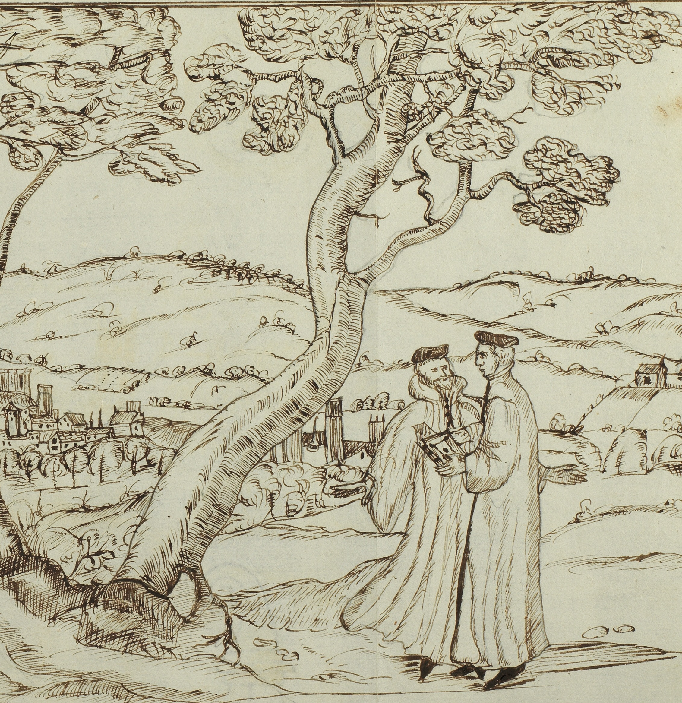

A Ghost Between Travel Accounts

Travel accounts are not just about places—they are often about people. Sometimes, a single encounter turns into something bigger, such as when a familiar name appears again in another traveller’s writing. These recurring figures become anchor points in the social networks of travel across time and space.
One particularly intriguing example is Kaspar Thomann, a Zürich traveller to England, who appears in three different accounts. In October 1599, Thomas Platter met the young scholar by chance at Richmond Palace, as he was trying to get the permission of Queen Elizabeth to study at Oxford University. Platter reported how he graciously gave Thomann some advice and mediated between him and the Queen's secretary, which, according to Platter, helped Thomann being successfully admitted (fol. 748r).
Nine years later, in 1608, Thomas Coryat visited Zürich and quickly became friends with Kaspar's father, Rudolf Thomann. He is not only described as extremely generous to Coryat but also tells him about his son “Gaspar Thomannus a man of good gifts, and a lover of learning hath beene many yeares commorant in our Universitie of Oxford” (390). Thomann must have left Oxford sometime after, as in around 1613, two other young Zürich travellers, Marcus Stapfer and Johann Rudolf Hess, advised the reader to seek out “Mr. Tomman” to help navigate London (fol. 176r-v).
Even though Kaspar Thomann shows up in three completely unrelated travel accounts, he remains a remarkably elusive figure—like a ghost drifting between their pages. Until now, no one has investigated him and beyond these scattered mentions, almost nothing is known about him. Through my research I am now able to shed new light on Thomann. He was baptized on November 16, 1574 in St. Peter in Zürich and studied in Zürich, Geneva, and Montpellier. There, he briefly met Platter in 1596 and left a rather puzzling entry in Platter's album amicorum, writing “Lack of skill also counts as fault” and “Damage makes you wise.”
In Summer of 1599, he reached England and documented his struggles in getting permission to study at Oxford, as well as his impressive support system in London, through his letters back home. Interestingly, Thomann likewise reports on his visit to Richmond Palace, where Platter had met him. Yet while Platter proudly reports on his role in facilitating Thomann's admission, Thomann pointedly does not mention Platter at all. In 1600, Thomann was finally permitted to study at Oxford. Of his time in Oxford there are several letters extant as well as a pointed remark on how Thomann had “corrupt[ed] the Students” with his “calvinistical Doctrine”, and he was recorded as one of the first foreign admissions to the Bodleian library in 1603.
Around 1608, when Thomas Coryat met his father, Thomann moved back to London “at Mr Rymes his howse, in the Blackfriers.” In 1611, Thomann mentions his patron, William Seymour, recounting how Seymour had recently escaped imprisonment after his secret marriage to Arabella Stuart—a scandal that shook the English court. At some point, Thomann started practicing medicine and in 1623 married an Englishwoman, Anne Wetherall, in Shoreditch. Letters by Johann Joachim Rusdorf indicate that Thomann dabbled in astrology, and further befriended none other than the famous astrologer Richard Napier. Thomann's trace culminates in a series of censorial hearings by the Royal College of Physicians between 1627 and 1633, where he was declared an unlicensed practitioner. What happened next remains a mystery—there’s no record of him after the trials and his later fate is unknown.
Stefanie Heeg
See Heeg, Stefanie. ‘Anglo-Swiss Travel Networks at the Turn of the Seventeenth Century’, Swiss Papers in English Language and Literature (SPELL), 45 (2025), forthcoming.